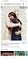

Book as Mediun of connections

What if this connection you maid online with someone far from you was able to unlock for you and her a page to read? What if you could request a page unlock to your friends and they could unlock it by just pushing the yes button? With this you read a 96 pages book just by sending a request to 96 of your Facebook friends or twitter followers. Book can be a fuel for a connection engine. Book should joy only be a monetary instrument but tool for sharing and getting attention and connecting with ideas and people. There are lot of experimental things we could do with books. I am just trying hard to make these experiment and learn something from them. Books are great teachers and friends.
